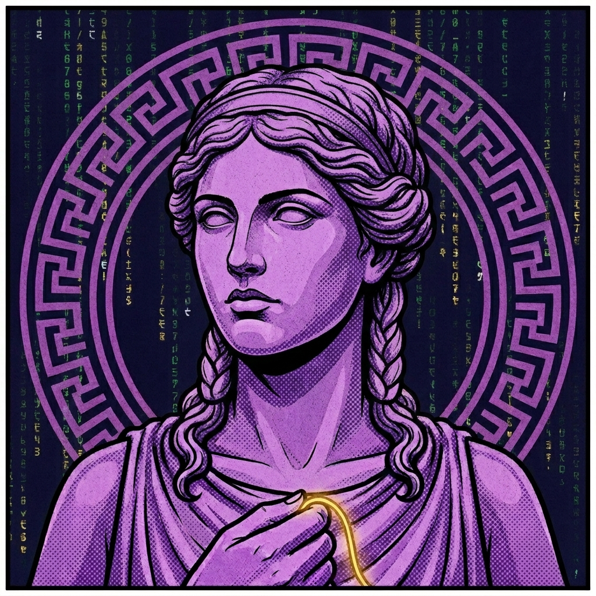
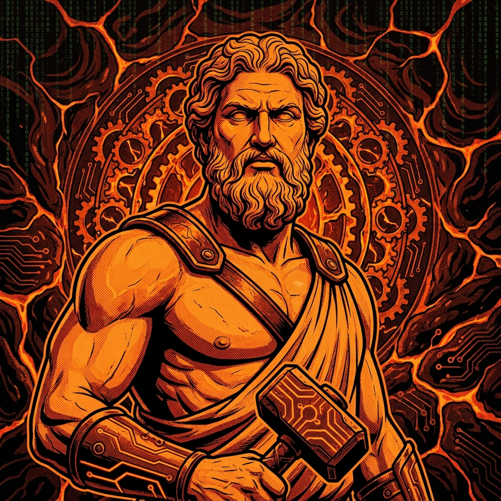
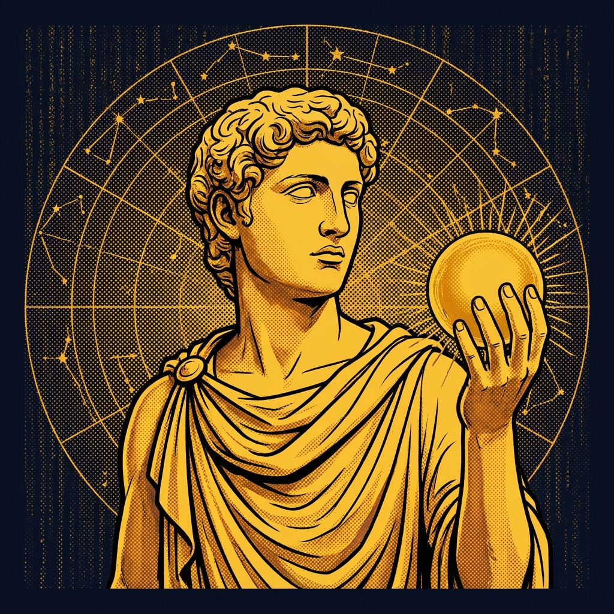
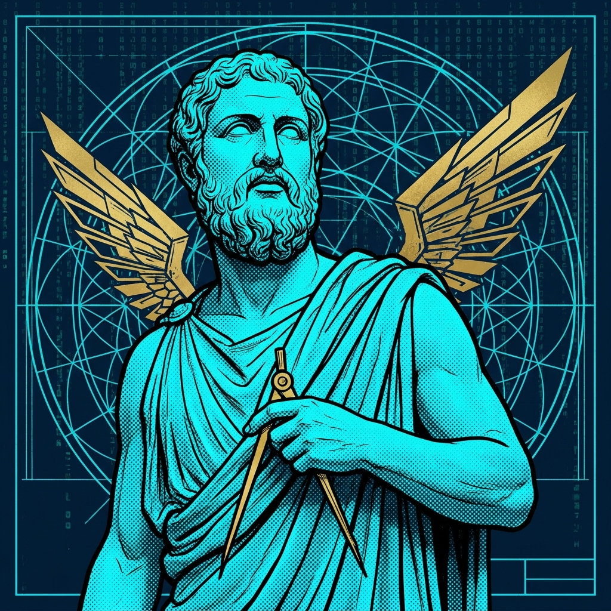
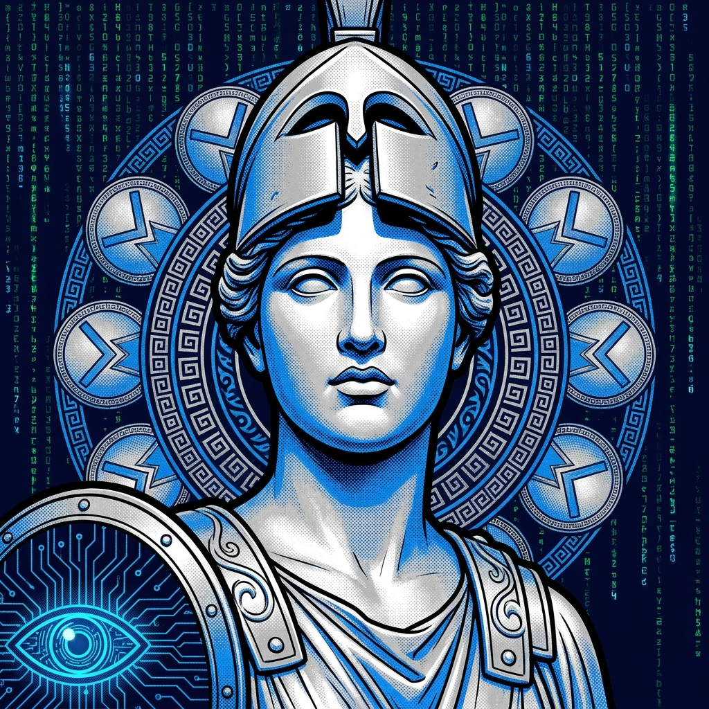

A provider-agnostic multi-agent system. Orchestrates 6 specialized Daimons for collaborative software development through Olympus MCP and the ACP protocol.
$ git clone https://github.com/DarkArty07/Aether-Agents.git
$ cd Aether-Agents && pip install -e .
$ HERMES_HOME=~/Aether-Agents/home hermes --profile hermes
Aether Agents is not a chatbot wrapper nor a simple IDE plugin. It is an agent ecosystem where each Daimon runs as a persistent process, gets spawned on first call, stays alive between sessions, and handles a single well-defined domain. All routing goes through Hermes — the orchestrator — via Olympus MCP's talk_to() tool.
SOUL.md — a strict system prompt defining its role, responsibilities, and the things it must never do.
.eter/ directory at its root — shared state across the team.
Hermes connects to the Olympus MCP server via stdio. Olympus exposes two tools: talk_to() and discover(). Under the hood, Olympus uses the ACP (Agent Client Protocol) to spawn and communicate with each Daimon.
The talk_to() tool exposes 7 actions. Daimons are keep-alive — spawned on first open, they stay alive between sessions.
discoveropenmessagepollwaitcancelcloseEvery project tracked by Aether gets this directory structure at its root. Each Daimon owns a subdirectory.
PROJECT/.eter/
├── .hermes/ ← DESIGN.md + PLAN.md (architecture, decisions)
├── .ariadna/ ← CURRENT.md + LOG.md (status, session history)
├── .hefesto/ ← TASKS.md (implementation tracking)
└── .etalides/ ← RESEARCH.md (append-only, only when used)
Six specialized agents. Each has its own model configuration, tool access, and a SOUL.md that defines precisely what it does — and what it must never do.
The only agent the user speaks to directly. Decomposes tasks, routes to the right Daimon, and synthesizes results. Owns .eter/.hermes/.

Maintains CURRENT.md and LOG.md. Detects blockers before they stop work. Provides session onboarding status on every open.

Receives specs from Hermes, spawns atomic sub-agents (Ergates) via delegate_task(role=...), consolidates results, and runs tests.

Uses web_search + web_extract. Every finding requires a source URL and a confidence level. Output is always structured: Findings / Sources / Confidence.

Designs user flows, layout specs, and HTML/CSS prototypes. Performs UX review post-implementation to catch regressions. Ensures WCAG compliance.

STRIDE threat modeling, OWASP review, dependency CVE auditing. Flags risks to Ariadna as sprint blockers. Activates proactively on new endpoints or dependencies.
Aether Agents doesn't prescribe a model. Any provider exposing an OpenAI-compatible API works. Each Daimon gets its own .env file — you can run Hermes on GPT-4o and Hefesto on a local vLLM instance, or use a single model for everything. Change it anytime.
https://api.openai.comOPENAI_API_KEYhttps://api.anthropic.comANTHROPIC_API_KEYhttps://generativelanguage.googleapis.comGEMINI_API_KEYhttps://api.moonshot.cnMOONSHOT_API_KEYhttps://openrouter.aiOPENROUTER_API_KEYhttp://localhost:11434http://localhost:8000This is not an exhaustive list. Any OpenAI-compatible endpoint works.
git clone https://github.com/DarkArty07/Aether-Agents.git
cd Aether-Agents
python3 -m venv venv
source venv/bin/activate
pip install -e .Each Daimon has its own .env.example. Copy it, fill in your API keys.
cp home/profiles/hermes/.env.example home/profiles/hermes/.env
# Repeat for ariadna, hefesto, etalides, daedalus, athenaexport HERMES_HOME=~/Aether-Agents/home
# Use the verification script
bash scripts/start.sh
# Or run directly
HERMES_HOME=~/Aether-Agents/home hermes --profile hermesHERMES_HOME=~/Aether-Agents/home hermes --profile hefesto
HERMES_HOME=~/Aether-Agents/home hermes --profile ariadna